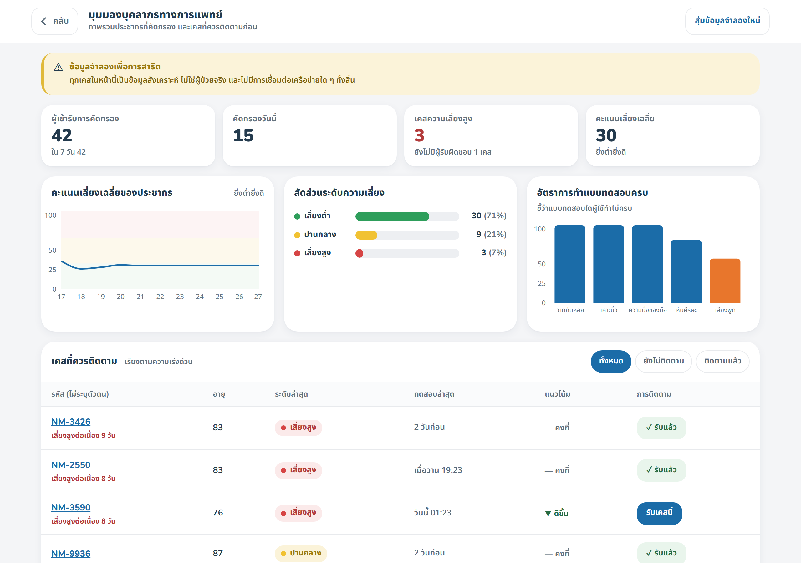
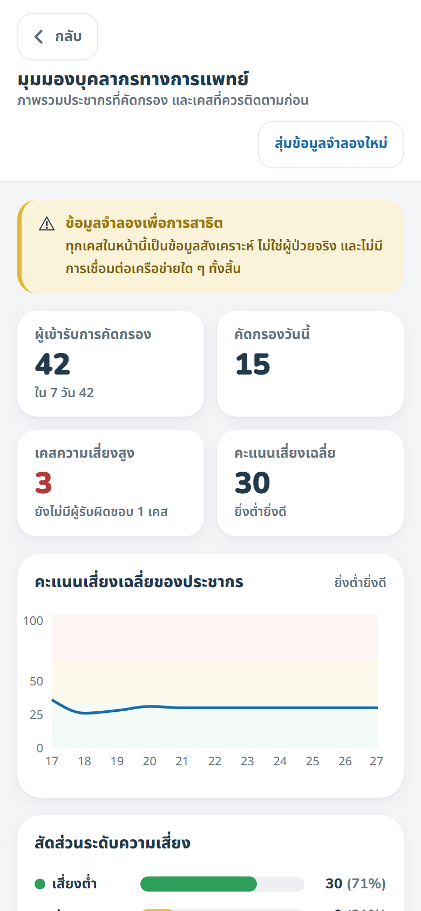
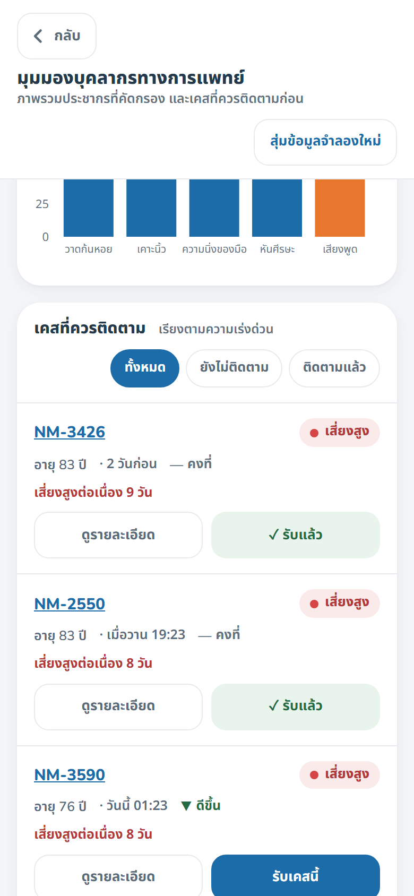

HIT AWARD 2026 · M19 NEURO MOTION AI
แผนพัฒนาระบบ
5 วันก่อนแข่ง · และเส้นทางหลังจากนั้น
รวมสถาปัตยกรรมระบบ Login และ Admin Dashboard
ปรับปรุง28 สิงหาคม 2569
วันแข่ง1 กันยายน 2569 · ช่วงที่ 2 · 13:00–14:20 น.
เหลือ4 วัน
หลักการทุกงานต้องตอบคำถามว่า “ช่วยคะแนน C2 C4 หรือ C5 อย่างไร”
1. หลักการตัดสินใจของแผนนี้
ทำไมลำดับงานจึงเป็นแบบนี้
ข้อจำกัดที่กำหนดทุกอย่าง: เหลือ 5 วัน
ในเวลา 5 วัน เราทำได้ดีเพียง หนึ่งถึงสองเรื่อง เท่านั้น การเลือกผิดเรื่องแปลว่าเสียโอกาส
ที่ไม่ได้กลับมาอีก เพราะรอบชิงมีครั้งเดียว
1.1 ข้อเสนอเรื่อง Login และ Admin Dashboard
ทีมเสนอให้เริ่มทำระบบ login และ admin dashboard ซึ่งเป็นทิศทางที่ถูกต้องสำหรับผลิตภัณฑ์ระยะยาว
แต่ผมขอเสนอให้แยกเป็นสองส่วน เพราะสองส่วนนี้มีความเสี่ยงต่างกันมาก
| งาน | ก่อนแข่ง? | เหตุผล |
|---|
ระบบ login จริง
มีเซิร์ฟเวอร์ บัญชีผู้ใช้ รหัสผ่าน |
ไม่ควร |
ต้องมี backend + ฐานข้อมูล + ระบบยืนยันตัวตน ซึ่งเพิ่มจุดพังให้การสาธิตสด
ถ้าเน็ตในงานล่ม เดโมจบทันที ขณะที่ตอนนี้แอปทำงานออฟไลน์ได้ 100%
และกรรมการไม่ได้ขอสิ่งนี้ |
หน้าสำหรับบุคลากร (แบบทำงานในเครื่อง)
อ่านข้อมูลเดิมในเครื่อง ไม่มีเซิร์ฟเวอร์ |
✓ เสร็จแล้ว |
ใช้เวลา ~1 วัน ไม่ต้องมีเซิร์ฟเวอร์ ไม่เพิ่มความเสี่ยงให้เดโมเลย
และแสดง roadmap ให้กรรมการเห็นเป็นรูปธรรม ช่วยคะแนน C4 (ความเป็นไปได้ 15%) |
ข้อเสนอ
อัปเดต 28 ส.ค.: ทำเสร็จแล้ว — หน้าสำหรับบุคลากรแบบทำงานในเครื่องพร้อมใช้แล้ว (หัวข้อ 3)
แล้วค่อยทำ login จริงและ backend หลังแข่ง ซึ่งจะมีเวลาทำให้ถูกต้องและปลอดภัยตาม PDPA
ได้อย่างเต็มที่ — รายละเอียดสถาปัตยกรรมอยู่ในหัวข้อ 4 และ 5 ครบถ้วน
ถ้าทีมยืนยันจะทำ login จริงก่อนแข่ง แผนในหัวข้อ 4 ใช้ได้ทันที
เพียงแต่ขอให้ทำหลังจากงานวันที่ 1–2 เสร็จแล้วเท่านั้น และเตรียมโหมดออฟไลน์ไว้เป็นทางหนีทีไล่เสมอ
1.2 สิ่งที่เสร็จแล้ว
- ✓ ชุดตรวจสอบเชิงเทคนิค 21 รายการ — npm run validate ผ่านทั้งหมด (เสร็จ 27 ส.ค.)
- ✓ แอปครบ 5 แบบทดสอบ ทำงานได้จริงบนมือถือ
- ✓ เอกสารคู่มือพร้อมภาพ 27 หน้า ใช้เป็นไฟล์สำรองตอนสาธิตได้
- ✓ ระบบทำงานออฟไลน์ 100% ไม่ต้องพึ่งอินเทอร์เน็ตในงาน
- ✓ มุมมองสำหรับบุคลากร เปิดที่ /clinic — ข้อมูลจำลอง ไม่มีเซิร์ฟเวอร์ (เสร็จ 28 ส.ค.)
2. แผน 5 วันก่อนแข่ง
เรียงตามผลต่อคะแนน — ห้ามสลับลำดับ
วันที่ 1 — พฤหัสบดี 27 ส.ค.
เป้าหมาย: หลักฐาน (C5 = 15%)
สร้างชุดตรวจสอบเชิงเทคนิค 21 รายการ ✓ เสร็จแล้ว- อ่านผลการตรวจสอบให้เข้าใจทุกบรรทัด — ต้องอธิบายได้ว่าแต่ละตัวเลขแปลว่าอะไร
- หาแหล่งอ้างอิงตัวเลขปัญหา (จำนวนผู้ป่วยพาร์กินสัน / ระยะเวลากว่าจะได้วินิจฉัย)
จากแหล่งที่อ้างอิงได้ เช่น กรมการแพทย์ WHO หรืองานวิจัยที่ตีพิมพ์
ถ้าหาไม่ได้ ให้ตัดตัวเลขออกจากสคริปต์
วันที่ 2 — ศุกร์ 28 ส.ค. (วันนี้)
เป้าหมาย: การสาธิตสด (C4 = 15%, C7 = 8%)
- เลือกเส้นทางสาธิต ที่เห็นครบ input → analysis → result เร็วที่สุด
(แนะนำ: วาดก้นหอย เพราะเห็นเส้นที่ลากทันที ไม่ต้องขออนุญาตกล้อง/ไมค์)
- ซ้อมจับเวลา จนสาธิตจบใน 90 วินาที โดยไม่ต้องพูดว่า “เดี๋ยวนะครับ”
- อัดวิดีโอสำรอง ของการสาธิตทั้งหมด ใส่ไว้ในไฟล์สไลด์เดียวกัน
(กรรมการสั่งข้อนี้ตรง ๆ ในเอกสาร)
- ทดสอบบนมือถือเครื่องที่จะใช้จริง และเช็กว่าโหมดออฟไลน์ทำงาน
วันที่ 3 — เสาร์ 29 ส.ค.
เป้าหมาย: ความใหม่ + สคริปต์ (C2 = 20%)
- ท่องประโยคแยกตัวจาก GFairy จนพูดได้โดยไม่ต้องคิด
- เขียนสคริปต์ 4 นาทีให้จบ แล้วจับเวลาซ้อม อย่างน้อย 3 รอบ
- ตัดทุกประโยคที่ไม่ตอบ 4 คำถามหลัก (ปัญหา / นวัตกรรม / พิสูจน์ / ผลลัพธ์)
เริ่มทำหน้าสำหรับบุคลากรแบบทำงานในเครื่อง ✓ เสร็จแล้ว 28 ส.ค. (หัวข้อ 3)
วันที่ 4 — อาทิตย์ 30 ส.ค.
เป้าหมาย: ช่วงถาม-ตอบ 3 นาที
- ซ้อม Q&A เต็มรูปแบบ 2 รอบ ให้คนอื่น (ที่ปรึกษา/เพื่อน) ถามแบบไม่บอกล่วงหน้า
- ซ้อมตอบคำถามที่ตอบยากที่สุดก่อน — เรื่องความแม่นยำ และเรื่อง GFairy
- เตรียมข้อจำกัด 3 ข้อที่จะพูดเองก่อนถูกถาม
- ห้ามเขียนโค้ดใหม่ตั้งแต่วันนี้เป็นต้นไป — โค้ดที่แก้วันสุดท้ายคือโค้ดที่พังบนเวที
วันที่ 5 — จันทร์ 31 ส.ค.
เป้าหมาย: ซ้อมใหญ่และเตรียมของ
- ซ้อมเต็มรูปแบบ 4 + 3 นาที เหมือนอยู่บนเวทีจริง อย่างน้อย 2 รอบ
- เตรียมของ: มือถือชาร์จเต็ม + พาวเวอร์แบงก์ + สายชาร์จ + ไฟล์สไลด์ใน USB 2 อัน
- ตั้งค่ามือถือ: ปิดการแจ้งเตือน ปิดการหมุนจอ ความสว่างสูงสุด ปิดโหมดประหยัดแบตเตอรี่
- เช็กว่าแอปเปิดได้โดยไม่ต้องใช้เน็ต (โหมดเครื่องบิน แล้วลองเปิด)
วันแข่ง — อังคาร 1 ก.ย.
คิวช่วงที่ 2 · 13:00–14:20 น.
- ถึงงานก่อน 12:30 น. (ก่อนคิวอย่างน้อย 30 นาที ตามกติกา)
- ลงทะเบียนและส่งไฟล์นำเสนอที่จุดลงทะเบียน
- ทดสอบเชื่อมต่อจอกับเครื่องจริงในห้อง ถ้าอนุญาต
- ผลงานจัดแสดงต่อในงาน ลาดกระบังนิทรรศน์ 1–6 กันยายน
กฎเหล็ก 3 ข้อ
- ห้ามเพิ่มฟีเจอร์ใหม่หลังวันที่ 3 — ทุกบรรทัดที่แก้คือความเสี่ยงใหม่
- ห้ามสาธิตสิ่งที่ยังไม่เคยซ้อม แม้จะดูเจ๋งแค่ไหน
- เตรียมแผนสำรองเสมอ — วิดีโอ ภาพหน้าจอ และเอกสาร PDF อยู่ในเครื่องเดียวกัน
3. หน้าสำหรับบุคลากร — ทำเสร็จแล้ว
Admin Dashboard รุ่นที่ไม่ต้องมีเซิร์ฟเวอร์ · เปิดที่ /clinic · อัปเดต 28 ส.ค. 2569
สถานะ: พัฒนาเสร็จและกดใช้ได้จริงแล้ว
หน้านี้ทำงานได้จริงทั้งบนเดสก์ท็อปและมือถือ ตัวกรองและการรับเคสทำงานและบันทึกค่าไว้
ยังไม่มีเซิร์ฟเวอร์และไม่มีการเชื่อมต่อเครือข่ายใด ๆ จึงไม่เพิ่มความเสี่ยงให้การสาธิตสดตามที่วางแผนไว้

มุมมองบุคลากรบนเดสก์ท็อป — ภาพจากระบบจริง ข้อมูลในภาพเป็นข้อมูลจำลอง
3.1 สิ่งที่ทำเสร็จแล้ว
| ส่วนประกอบ | สถานะ | รายละเอียด |
|---|
| ตัวเลขสรุป (KPI) | ✓ | ผู้เข้ารับการคัดกรอง · คัดกรองวันนี้ · เคสเสี่ยงสูง · คะแนนเฉลี่ย |
| สัดส่วนระดับความเสี่ยง | ✓ | แถบสัดส่วน ต่ำ/ปานกลาง/สูง พร้อมจำนวนและเปอร์เซ็นต์ |
| ตารางเคสที่ต้องติดตาม | ✓ | เรียงตามความเร่งด่วน + แสดงจำนวนวันที่เสี่ยงสูงต่อเนื่อง |
| กราฟแนวโน้มรวม | ✓ | คะแนนเฉลี่ยของประชากรพร้อมแถบสีบอกระดับ |
| อัตราการทำแบบทดสอบครบ | ✓ | ชี้ว่าแบบทดสอบใดผู้ใช้ทำไม่ครบ (แท่งสีส้ม = ต่ำกว่า 70%) |
| แผงรายละเอียดรายบุคคล | ✓ | คะแนนย้อนหลัง + ผลรายแบบทดสอบ + ปุ่มรับเคส |
| ตัวกรอง 3 แบบ | ✓ | ทั้งหมด / ยังไม่ติดตาม / ติดตามแล้ว — บันทึกค่าไว้เมื่อรีโหลด |
| รองรับมือถือ | ✓ | ตาราง 6 คอลัมน์เปลี่ยนเป็นการ์ดอัตโนมัติเมื่อจอแคบกว่า 1024px |
| ข้อมูลจำลองหลายผู้ใช้ | ✓ | สร้างกลุ่มตัวอย่าง 42 คน พร้อมปุ่มสุ่มใหม่ |
3.2 รองรับทั้งคอมพิวเตอร์และมือถือ

1มือถือ — ภาพรวม
ตัวเลขสรุปเรียง 2 คอลัมน์

2มือถือ — รายการเคส
ตารางเปลี่ยนเป็นการ์ด
ทำไมต้องรองรับมือถือ
เจ้าหน้าที่ในโรงพยาบาลใช้คอมพิวเตอร์
แต่อาสาสมัครสาธารณสุขในชุมชนมักมีเพียงมือถือ
ตารางเคส 6 คอลัมน์อ่านไม่ได้บนจอ 390 พิกเซล จึงเปลี่ยนเป็นการ์ดอัตโนมัติ
ตรวจแล้ว: ไม่มีเนื้อหาล้นขอบจอทั้งสองขนาด
และตัวกรองแบ่งจำนวนเคสได้ครบถ้วน (8 + 4 = 12)
3.3 บั๊กที่พบระหว่างพัฒนา และวิธีแก้
ตารางคัดกรองว่างเปล่าในบางครั้ง
เดิมสุ่มระดับความเสี่ยงทีละคนที่ประมาณ 7% ทำให้กลุ่มตัวอย่าง 42 คน
ไม่มีเคสเสี่ยงสูงเลยประมาณ 1 ใน 20 ครั้ง — และค่าเริ่มต้นที่ตั้งไว้ดันเป็นหนึ่งในนั้นพอดี
ผลคือหน้าจอที่มีไว้เพื่อคัดกรองกลับไม่มีเคสให้คัดกรอง
แก้โดยกำหนดสัดส่วนแบบแบ่งชั้น (การันตีอย่างน้อย 3 เคสเสี่ยงสูง) แล้วสับเปลี่ยนลำดับ
ทดสอบ 5 ชุดค่าเริ่มต้นแล้วมีเคสเสี่ยงสูงทุกครั้ง
ข้อบังคับด้าน PDPA ที่ต้องมีตั้งแต่รุ่นสาธิต
- แสดงเฉพาะรหัสอ้างอิงแบบไม่ระบุตัวตน เช่น NM-2841 ห้ามแสดงชื่อจริงหรือเลขบัตรประชาชนเด็ดขาด
- ติดป้ายบนหน้าจอชัดเจนว่า “ข้อมูลจำลองเพื่อการสาธิต”
เพื่อไม่ให้กรรมการเข้าใจผิดว่าเรามีข้อมูลผู้ป่วยจริง — ข้อนี้สำคัญมากต่อความน่าเชื่อถือ
- คงข้อความกำกับว่าผลเป็นการคัดกรองเบื้องต้น ไม่ใช่การวินิจฉัย
3.4 ประโยคที่ใช้อธิบายบนเวที
เมื่อสาธิตหน้านี้
“นี่คือมุมมองฝั่งบุคลากร ซึ่งตอนนี้เป็นต้นแบบที่อ่านข้อมูลจำลองในเครื่องครับ
เราออกแบบไว้ให้ต่อกับฐานข้อมูลจริงได้ทันทีเมื่อผ่านการตรวจสอบทางคลินิกแล้ว —
ที่ยังไม่ต่อตอนนี้เพราะการให้บุคลากรใช้ผลที่ยังไม่ได้สอบเทียบมาจัดลำดับผู้ป่วย เป็นความเสี่ยงที่เรายังไม่ควรสร้างครับ”
4. ระบบ Login จริง (หลังแข่ง)
สถาปัตยกรรมที่แนะนำ และเหตุผลของแต่ละทางเลือก
4.1 ทำไมต้องรอหลังแข่ง
ระบบยืนยันตัวตนที่เกี่ยวกับข้อมูลสุขภาพ ไม่ใช่แค่หน้าจอ login
แต่รวมถึงการเก็บรหัสผ่านอย่างปลอดภัย การจัดการ session การกู้บัญชี และการทำตาม PDPA
ทำแบบเร่งรีบใน 5 วันแล้วมีช่องโหว่ จะเป็นปัญหาที่หนักกว่าการไม่มีระบบเลย
4.2 สถาปัตยกรรมที่แนะนำ
| ส่วน | เลือกใช้ | เหตุผล |
|---|
| ฐานข้อมูล + Auth | Supabase |
มี Postgres + ระบบยืนยันตัวตน + Row Level Security ในตัว มีระดับใช้ฟรี
และเขียน policy จำกัดสิทธิ์ระดับแถวได้ ซึ่งจำเป็นมากกับข้อมูลสุขภาพ |
| วิธียืนยันตัวตน | เบอร์โทร + OTP |
เหมาะกับผู้สูงอายุที่สุด — ไม่ต้องจำรหัสผ่าน ไม่ต้องมีอีเมล
และคนไทยคุ้นเคยกับ OTP อยู่แล้ว |
| การแยกข้อมูลรายคน | Row Level Security |
ผู้ใช้เห็นได้เฉพาะแถวของตัวเอง บังคับที่ชั้นฐานข้อมูล ไม่ใช่ที่โค้ดฝั่งหน้าเว็บ
ซึ่งปลอมได้ |
| โหมดออฟไลน์ | เก็บในเครื่องก่อน แล้วค่อยซิงก์ |
ห้ามทิ้งความสามารถนี้ ผู้ใช้ต้องทำแบบทดสอบได้แม้ไม่มีเน็ต
แล้วค่อยซิงก์เมื่อออนไลน์ — เป็นจุดแข็งของเราที่ไม่ควรเสียไป |
| ชั้นจัดเก็บในโค้ด | แก้แค่ storage.ts |
โปรเจกต์แยกชั้นนี้ไว้แล้วตั้งแต่ต้น หน้าจออื่นไม่ต้องแก้เลย |
4.3 ลำดับการทำ
- ออกแบบตารางข้อมูล — ผู้ใช้ / เซสชัน / ผลรายแบบทดสอบ / บันทึกความยินยอม (2 วัน)
- ต่อ Supabase Auth ด้วย OTP และทดสอบกับผู้สูงอายุจริงอย่างน้อย 3 คน (3 วัน)
- เขียน policy จำกัดสิทธิ์ และทดสอบว่าผู้ใช้ A เข้าถึงข้อมูลผู้ใช้ B ไม่ได้จริง (2 วัน)
- ทำระบบซิงก์แบบออฟไลน์ก่อน พร้อมจัดการกรณีข้อมูลชนกัน (3 วัน)
- ย้ายข้อมูลเดิมในเครื่องขึ้นระบบใหม่ โดยขอความยินยอมใหม่ก่อนเสมอ (1 วัน)
สิ่งที่ต้องมีเพิ่มตาม PDPA เมื่อมีเซิร์ฟเวอร์
- บันทึกว่าผู้ใช้ยินยอมเมื่อไร รุ่นข้อความไหน และถอนความยินยอมเมื่อไร
- ปุ่มดาวน์โหลดข้อมูลของฉัน และลบบัญชีถาวร ที่ทำงานได้จริงบนเซิร์ฟเวอร์
- เข้ารหัสข้อมูลทั้งตอนส่งและตอนเก็บ
- กำหนดระยะเวลาเก็บข้อมูล และลบอัตโนมัติเมื่อครบกำหนด
5. Admin Dashboard เต็มรูปแบบ (หลังแข่ง)
ต่อยอดจากรุ่นทำงานในเครื่อง เมื่อมีฐานข้อมูลแล้ว
5.1 สิ่งที่เพิ่มจากรุ่นสาธิต
| ความสามารถ | รายละเอียด |
|---|
| บัญชีบุคลากร + บทบาท | แยกสิทธิ์ แพทย์ / พยาบาล / ผู้ดูแลระบบ แต่ละบทบาทเห็นข้อมูลไม่เท่ากัน |
| การจับคู่แบบไม่ระบุตัวตน | บุคลากรเห็นรหัสอ้างอิง การเปิดดูตัวตนจริงต้องมีเหตุผลและถูกบันทึกไว้ |
| บันทึกการเข้าถึงข้อมูล | ใครเปิดดูข้อมูลใคร เมื่อไร ด้วยเหตุผลอะไร — เป็นข้อบังคับตาม PDPA |
| ระบบมอบหมายเคส | รับผิดชอบเคส นัดติดตาม บันทึกผลการติดต่อ |
| รายงานส่งออก | สรุปรายเดือนสำหรับผู้บริหารโรงพยาบาล |
5.2 ลำดับความสำคัญที่แนะนำ (หลังแข่ง)
ระยะที่ 1 — การตรวจสอบทางคลินิก
สำคัญที่สุด · 3–6 เดือน
- ติดต่อโรงพยาบาลหรืออาจารย์แพทย์เพื่อขอความร่วมมือ
- ขออนุมัติจริยธรรมการวิจัย (IRB) — ทีม U07 ก็ถูกถามเรื่องนี้เช่นกัน
- เก็บข้อมูลผู้ป่วยที่วินิจฉัยแล้ว + กลุ่มควบคุม
- คำนวณค่าความไว/ความจำเพาะจริง แล้วปรับค่าเกณฑ์ทั้งหมดใน thresholds.ts
ระยะที่ 2 — ระบบบัญชีและฐานข้อมูล
1–2 เดือน
ระยะที่ 3 — Dashboard เต็มรูปแบบ
1–2 เดือน
ระยะที่ 4 — ความสามารถที่ยังขาด
ตามโอกาส
- วัดลายมือที่เล็กลง (micrographia) — อาการสำคัญที่เรายังไม่ได้วัด
- วัดภาวะใบหน้าไร้อารมณ์ (hypomimia)
- ขยายไปสู่แอป Android โดยใช้ตรรกะการคำนวณเดิม
ลำดับนี้สลับไม่ได้
ระยะที่ 1 ต้องมาก่อนเสมอ เพราะการให้บุคลากรทางการแพทย์ใช้ผลที่ยังไม่ได้สอบเทียบ
มาจัดลำดับความสำคัญของผู้ป่วย อาจทำให้ผู้ป่วยที่ควรได้รับการดูแลก่อนถูกจัดไว้ท้ายแถว
ซึ่งเป็นอันตรายจริง ไม่ใช่แค่ปัญหาทางเทคนิค